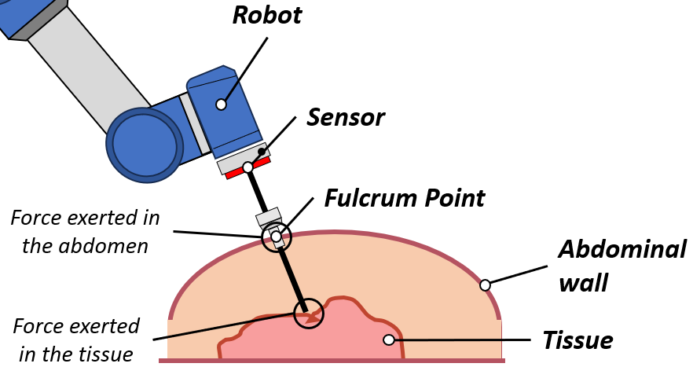
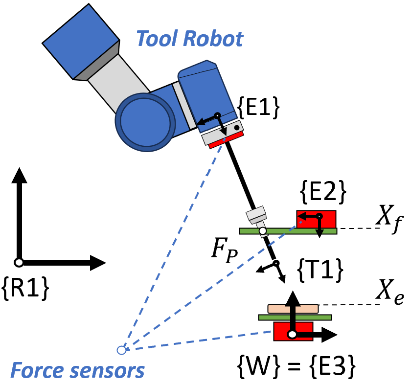
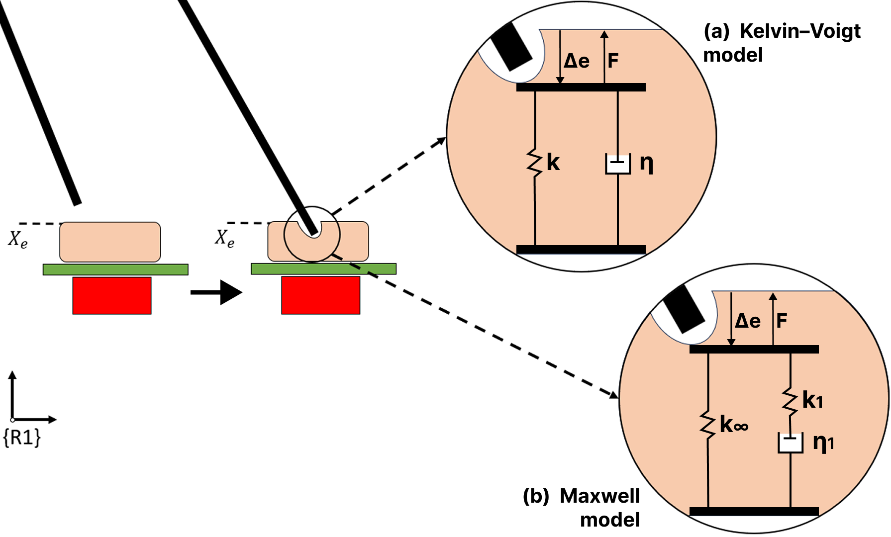
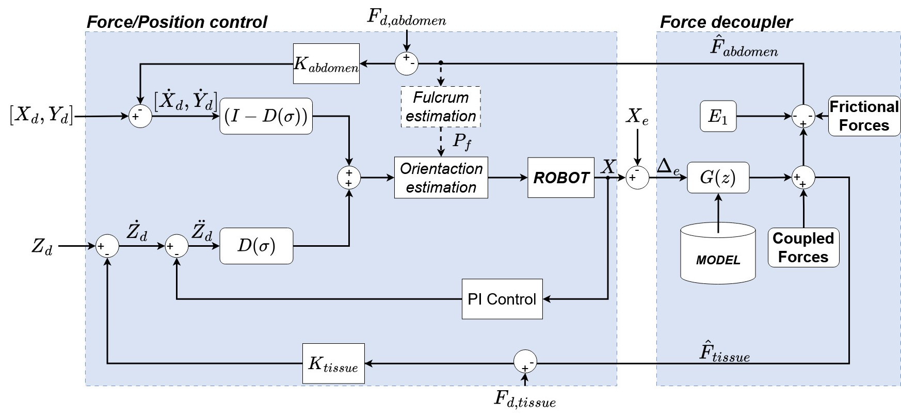
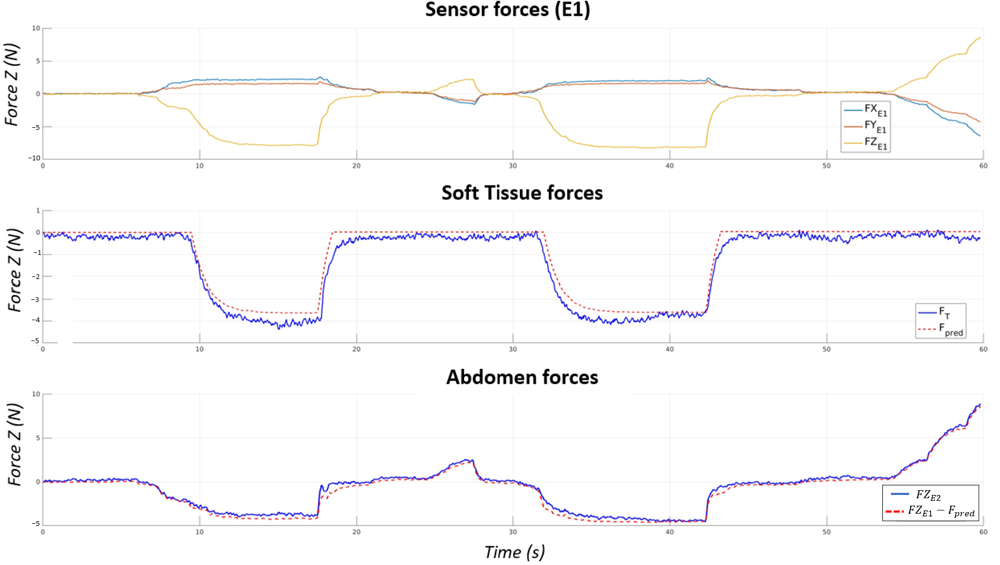
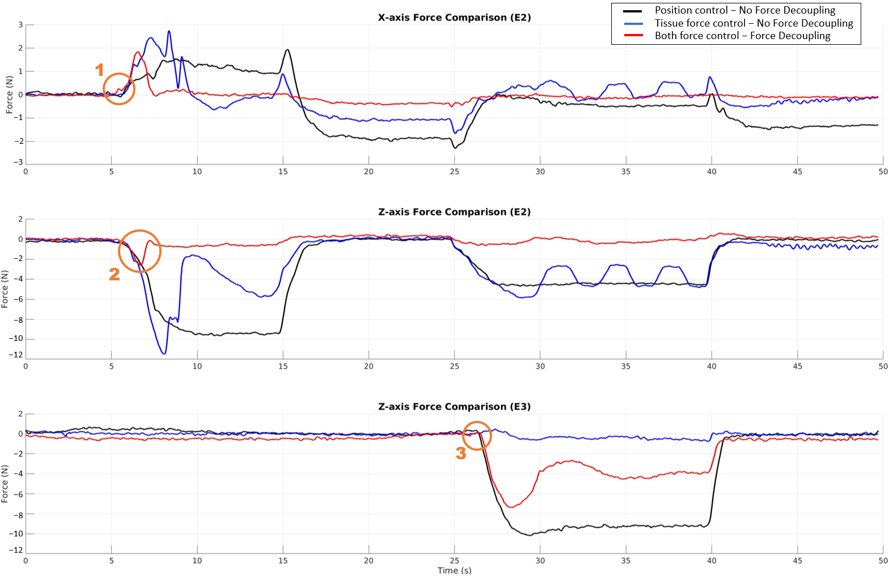

Decoupling Tissue and Abdominal Forces in Laparoscopic Robotic Surgery via Viscoelastic Modeling
Abstract
Laparoscopic surgery provides minimally invasive access to the abdominal cavity but poses control challenges for robotic systems due to the fulcrum constraint at the abdominal wall and the simultaneous interaction of the instrument with both the abdominal wall and internal soft tissue. While current clinical platforms (e.g., da Vinci) primarily rely on visual feedback and do not possess force sensors at the instrument tip, the transition to autonomous robotic surgery requires precise force feedback to ensure safety and effective tissue manipulation. Therefore, developing methods to decouple interaction forces using a single force sensor configuration is a critical enabling technology for future instrumented surgical robots. This paper presents a force-decoupling method that estimates, using only one force sensor, the individual forces applied to the abdominal wall and to internal soft tissue through a viscoelastic modeling approach based on Maxwell elements. Two configurations were evaluated, showing that a single-element Maxwell model provides the best trade-off between accuracy and computational complexity, achieving estimation errors of 9% and 13% for abdominal wall forces, with a root mean square error (RMSE) below 0.36 N. The method was implemented and experimentally validated in a force-controlled robotic system, demonstrating its effectiveness in improving force regulation and interaction safety without requiring additional sensors.
Keywords: laparoscopy surgery; viscoelastic models; RCM; robot; control; least-squares
Problem and Experimental Setup
The instrument interacts simultaneously with the abdominal wall at the fulcrum and with internal soft tissue — but only a single force sensor is available at the robot end-effector.

Fig. — A single force sensor at the robot end-effector must resolve two separate interaction forces: one at the abdominal wall (fulcrum) and one at the internal soft tissue.

Fig. — Force data collection platform. Three independent sensors measure the end-effector force (E1), abdominal wall force (E2), and soft-tissue force (E3) simultaneously.

Fig. — Two viscoelastic tissue models evaluated: Kelvin–Voigt (spring + damper in parallel) and the single-element Maxwell model (spring k∞ in parallel with a Maxwell element k₁–η₁ in series).
Control Architecture
The proposed architecture combines a hybrid force/position controller with an online force-decoupling layer. Abdominal wall forces are regulated via an admittance controller that corrects the fulcrum estimate in real time. Tissue interaction forces along the insertion axis are regulated via a parallel force/position controller. The decoupler estimates tissue force from the measured deformation Δe using the identified Maxwell model G(z), and subtracts it from the total end-effector reading to recover the abdominal force.

Fig. 4 — General control architecture. The Force Decoupler (right) uses the viscoelastic model G(z) to separate abdominal and tissue force estimates fed back to their respective controllers.
Results
The Maxwell model achieves 9% estimation error for soft-tissue forces and 13% for abdominal forces (RMSE < 0.36 N, R² = 0.98). Force decoupling enables simultaneous safe regulation of both contact sites.

Fig. 10 — Validation of force decoupling. Top: total force at E1. Middle: measured vs. estimated soft-tissue force (9% error). Bottom: measured vs. estimated abdominal force (13% error, RMSE = 0.35 N, R² = 0.98).

Fig. 11 — Control strategy comparison. The proposed dual-force control with decoupling (red) keeps abdominal forces near 0 N while accurately tracking a 4 N tissue force reference, outperforming position-only and non-decoupled force control.
BibTeX
@Article{app16042099,
AUTHOR = {Galán-Cuenca, Alvaro and Herrera-López, Juan María and García-Morales, Isabel and Muñoz, Victor},
TITLE = {Decoupling Tissue and Abdominal Forces in Laparoscopic Robotic Surgery via Viscoelastic Modeling},
JOURNAL = {Applied Sciences},
VOLUME = {16},
YEAR = {2026},
NUMBER = {4},
ARTICLE-NUMBER = {2099},
URL = {https://www.mdpi.com/2076-3417/16/4/2099},
ISSN = {2076-3417},
DOI = {10.3390/app16042099}
}